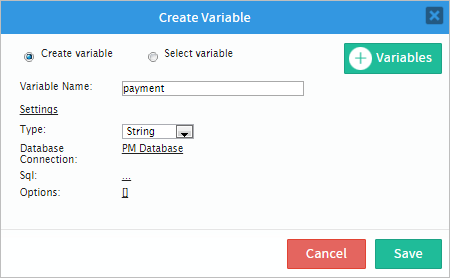
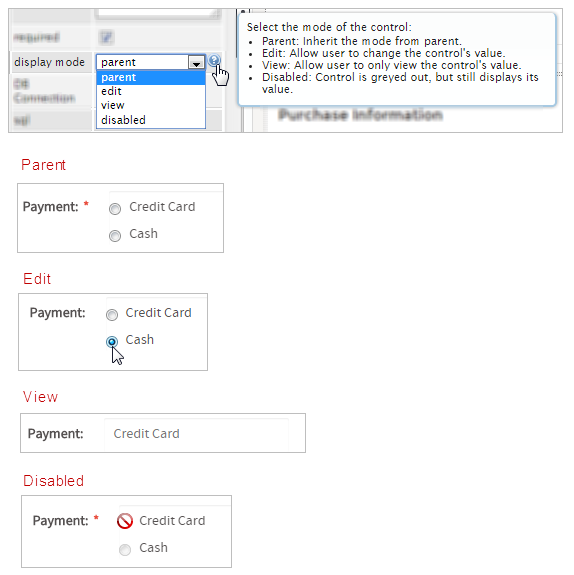
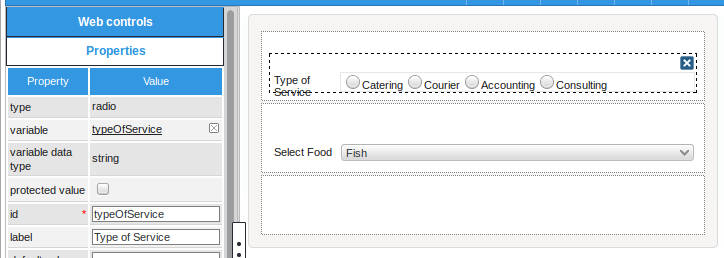

Overview
A radio (group) control offers only a binary on/off option. It is round and a black dot appears in the middle when activated (on). A radio group control is used instead of a checkbox or checkgroup control, when the user must select only one option from a domain of choices. Its icon in the tool panel of the DynaForm designer is the following:

The default appearance of a radio control is the following:

When running a case, it looks as follows:

Managing Radio (group)
After adding a checkbox into the designer, it is possible to customize its functionality and behavior, using the properties panel.

The properties set by default are the following:
- type Set by default as "
radio". This definition can not be modified. id Set by default as
radio000000000Xwhere "X" represents the corresponding numbering of the control in the design. This numbering starts in 1. After a variable is related to this control, the ID changes to the name of the variable, nevertheless it is possible to set a new ID to work with the control.- label Set by default as "
radio_X" where "X" represents the corresponding numbering of the control in the design. This numbering starts in 1. - display mode Set by default as "
parent". See this documentation for more information of the modes available for this control. - datasource Set by default as "
database". See this documentation for more information of the data source available for this control. - DB connection Set by default to "
PM Database". Take into account that if no SQL query is defined in the "sql" property, then no execution will be done. Also, when a variable is related to this control which has its own definition of the connection to a database (an external database or the ProcessMaker'sworkflowdatabase) this property inherits the definition of the variable related in the control.
Radio Group Control Properties
When adding this control to the designer, the options created in the configuration of the variable will be shown. If the options of the radio (group) must be retrieved from a SQL query, these will not be shown in the designer. The properties related to this web control are the following:
| Property | Description |
|---|---|
| Type | radio (readonly) |
| Variable | Click on the ... option to select the variable from the list of available variables. Check this section to learn more of how to relate a variable to a control.
|
| Variable Data type | After a variable has been related to the control, this property shows the data type of the variable (readonly). |
| Protected Value | By checking this option, the information stored in variables is protected. |
| ID | [Required] Field and HTML unique identifier. |
| Label | Set the label of the control in this property |
| Default value | Value set by default when the value retrieved is null.
Please, take a look at this documentation to learn how default values work with radio (groups). |
| Hint | Used to show help when the radio is rendered. It is shown when the pointer of the mouse is hovered over the ? icon. |
| Required | By checking this option, an asterisk is added in the label to indicate that the field is required. It means that an option must be selected mandatory from the control. When a required field is not filled in with any value, it will not possible to go to the next step. As of ProcessMaker 3.2.2, if the Required property is checked, a second property the required field error message is enabled to fill in a customized message.
|
| Display Mode | [Required] Display mode:
|
| Datasource | The data source for the list of available options:
|
| DB Connection | For a radio control, if needing to store a value retrieved from a database, select from the dropdown of this property the database connection that will be used (the connection must be already created in the process, check this section to learn more about it). |
| SQL | Insert in this property, the SQL query to populate the option of the control from database. For a hidden control the value stored in the field will be the first value retrieved from the database.
Please, take a look at this documentation to learn more about SQL options in controls. Acording to your ProcessMaker version, read the following sections to learn about how this control manages the values retrieved by a SQL query: |
| Data Variable | Assign the array variable using the @@ button.
|
| Options | Define in this property the options that will be used to define the value used in the field. For a textbox control the value stored in the field will be the first value set in the options. Please, take a look at this documentation to learn more about the values retrieved from the options. |


Radio Group Control Example
For this example add a "radio" control by dragging and dropping it from the left panel where the "Web Controls" are, into the Dynaform Designer.

Immediately after adding the control the Create Variable window will appear. For this example create a variable named "payment" and use the image below as guidance to add more settings to the control.

Click on any empty space of the control to display its properties on the left hand panel. Observe that the "variable", "variable data type" and "id" will changed depending on the specifications added in the "Create Variable" window.

The "label" property can be changed so when running a case it doesn't have a name like "radio_1" and instead it can be named (for this example) "Payment:"

For the next property which is "default value" the value is set by default when the value is null. The default value must be defined in the domain of the values defined in the options or SQL. ex: "VNZ". If the default value is not in the domain then the default value is not set. If the default value is not set, then none of the options are selected initially.

Next is the "hint" property which will be used to show help. For example, add the following text: "Choose one". When running a case an icon will appear on the right side corner of the control and when the mouse pointer is hovered over it the text added will be displayed.

The "required" property adds an asterisk in the label to indicate that the field is required and that an option must be selected. If trying to submit the form the field will immediately change to a red color and as seen in the image below if nothing is selected then an error message will be shown.

The next property is the "display mode" property which has many different options, to know more about them hover the mouse pointer over the question mark icon, this property will have the following effect on the control:

The "DB Connection" property is used to select between the list of database connections defined in the process objects in this case a PM_Database (a database of ProcessMaker). The "sql" property uses a query to call values from the database. For the use of a sql query the example will be changed. The name of the control will now be "country" so the query will populate the control with the countries in a table ISO_COUNTRY. Click on the underlined ellipsis ... of the "sql" property to open an "SQL Editor" and add the following code:
Note: The * identifier is not supported in SQL queries.
Save the SQL query added. When running a case, the control will be populated with all countries in the table as shown in the image below.

Note: In the image above, the quantity of countries is not completely shown because it would be extremely long to be shown in one image.
Getting back to the first example, in the "options" property notice that the values are already set. This is because when the variable was created the values where defined directly from there.

JavaScript in Radio Groups
To learn how to manipulate DynaForm controls using JavaScript, see JavaScript in DynaForms.
Radio groups in ProcessMaker 3 have the following field components:
- Label: The text displayed above or to the left of the field to identify it to the user.
- Text: The text (label) displayed for the selected option.
- Value: The stored value (key) for the selected option.

JavaScript Methods
Some of the JavaScript methods to manipulate radio groups include:
| Method | Description |
|---|---|
jQuery("#fieldID").getControl() |
Use this function to obtain the control's input field, rather the its DIV which is obtained with |
jQuery("#fieldID").disableValidation() |
Disable the validation of the field, so it doesn't check whether the field is required when the form is submitted. |
jQuery("#fieldID").enableValidation() |
Enable validation of the field, so it will check whether the field is required when the form is submitted. |
jQuery("#fieldID").getValue() |
Returns the value (key) of the radio group's selected option. |
jQuery("#fieldID").getText() |
Returns the displayed text (label) of the radio group's selected option. |
jQuery("#fieldID").getLabel() |
Returns the field's label, which is the text displayed above or to the left of the field to identify it. |
jQuery("#fieldID").setValue("newValue") |
Selects an option in the radio group by specifying its value (key). |
jQuery("#fieldID").setText("newText") |
Selects an option in the radio group by specifying its displayed text (label). |
jQuery("#fieldID").setLabel("newLabel")
|
Change the field's label, which is the text displayed above or to the left of the field to identify it. |
jQuery("#fieldID").setOnchange(function(newVal, oldVal){...}) |
Define a change event handler, which is a custom function that executes after the value of the field changes. The function may contain the following parameters:
|
To see code examples for these methods, see JavaScript Functions and Methods.
Displaying options in a horizontal list
The options in a radio group are displayed as a horizontal list when displayed in Preview Mode or when running a case. For radio groups which have a large number of options, this can take up a large amount of space and force the user to scroll through a long form. To change from a vertical list of options to a horizontal list, add the "radio-inline" class to the DIVs around each radio button.
For example, the following JavaScript code can be added to a DynaForm to change a radiogroup with the ID "selectCountries" to display a horizontal list of options:
Hide/Show fields based on radio selection
Javascript can be used to hide or show fields in the form, based on the selection in a radio button. Use the setOnchange() method to set the event handler to show/hide the fields.
For example, a form has a radio button with the ID "typeOfService" which contains the options: "catering", "courier", "accounting", "consulting". If the option "catering" is selected, then a dropdown box with the ID "selectFood" should become visible. Otherwise, this field should be hidden.
The following JavaScript code hides or shows the "selectFood" dropdown: